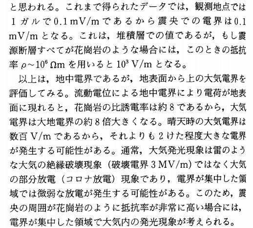

仮説：UFO/ET/Bigfoot 遭遇に伴う「青い光」の正体は、強電界による大気中の発光現象
初出
【編】仮説：UFO/ET/Bigfoot 遭遇に伴う「青い光」の正体は、強電界による大気中の発光現象 (2022-01-22) UFO
前置き
- UFO/ET/Bigfoot 遭遇に伴う「青い光」の目撃報告は非常に多い。cattle mutilation でも頻繁に報告されている。「青い光」（＝強電界による大気中の発光現象）→ ニセの体験の誘発
- 過去記事（下）でフラッシュ光と UFO の関係に関する仮説を述べたが、このフラッシュ光のエネルギー・レベルの高いものが、「青い光」なのだと解釈できる。エネルギー・レベルが高いゆえに誘発されたニセの体験もより信じがたいもの（例：後続の記事にある ET が狼の頭を載せて扮装とか、軍隊が狼人間に扮装した…の類）となる。
→ 独特のパターンをもった強い電界（*2） ref: Missing-411 事件：警察犬が行方不明者被害者の匂いを追跡できないのはなぜか？ (2021-12-14) の副産物がフラッシュ光なのではないか。つまり、 ・強い電界がフラッシュ光を引き起こした or ・脳の神経インパルスの撹乱がフラッシュ光の感覚を引き起こした のではないか。 - さらに、この電界は付近にいる人間の脳の神経インパルスを撹乱させ、UFO/ET の疑似体験を生じさせたと。つまり、彼が見た UFO/ET はその脳の神経インパルスによる意識の撹乱によって後付で解釈・生成されたニセの体験（*1）なのではないか。 ref: 1975-02-14, Reunion 島: フラッシュ光と共に消失した UFO/ET (2022-01-04)- 花崗岩のピエゾ効果による電界発生の定量的評価…の論文が下。 - なぜ、CE-5 の主催者や参加者たちが こぞって Mt. Shesta 山中や （James Gilliland の ECETI 牧場のある）Mt. Adams の麓で召喚儀式を開くのか？ その答えは下の論文にあるように「大気内での発光現象」（＝ orb）が多発し、それを UFO だと誤認するからではないのか。Paola Harris の ET 目撃も、アンテナ役のテレパシー受信も同じ神経インパルスの撹乱で説明がつくのでは？地震発生時の地表面電荷発生機構ref: 謎の行方不明事件と悪天候の関係 （途中：その4） (2021-09-01) ref: https://www.jstage.jst.go.jp/article/ieejeiss1987/117/10/117_10_1535/_pdf
「青い光」に関係する過去記事
Lon Strickler : abduction に先行して「青い光」や「青い orb」が生じている事例が多い (2022-01-13)・核ミサイル基地の二人の警備兵が１台のトラックで高速道路を移動中に、故障車両に遭遇。警備兵の一人が故障車両に近づいた時、上空から青い光が彼の上に降り注いだ。トラックの中の警備兵もその光景を見ていた。二人の警備兵はそこで記憶が途切れる。 ・故障車両に近づいていた警備兵は数マイル離れた野原の上で気を取り戻す。靴や銃は失せていた。裸足で近くの店まで歩き、店から基地に連絡。 ref: 1973年秋、サウスダコタ州：核ミサイル基地の警備兵がアブダクションされた（途中：その1） (2013-10-25)・Shane Elam の体験は 2010年の 9月か 10月に起きたという。その晩遅く、彼がコンピュータに向かって仕事をしていた時、近くでドスンという物音がした。音が聞こえてきた方向に振り向いた時、体が硬直した。 ・私の視界が白い光で包まれた。私は、ボンヤリした不透明な光の内側にいた。そして私の視界の中央から青い電気の火花が外側へ伸びていった。それは冷たい炎みたいだった。 ・私は何かの内側にいることが、心の目で分かった。完全な平安の感覚に包まれていた。私は何かと繋がっているようだった。ぬくもりの感覚が押し寄せてきた。それはほとんど実体があるかのようで――暖かく、柔らかく、液体のように――私の体を包み込んだ。 ・私は自分が少しばかり浮き上がっているように感じた。これまでには体験したことのないものだった。 ref: 2010年9 or 10月、オクラホマ：ある男性の神秘体験（全体） (2012-11-06)・その物体の中央には小さな複数の青い光が環状に取り巻いていた。その後、数分間に渡って、定期的に、その物体の底から炎が吹き出し、その火炎の噴射が外側に大きな円錐を描いた。毎回、その噴射が消えると UFO は数フィート、下方の道路の方へ降下した。だが、炎が噴射されるとまた同じ距離だけ上昇した。 ref: 1980年12月29日、テキサス州：ダイアモンド型巨大 UFO の目撃者達が放射線障害に（統合版） (2012-07-14)・しばらくして、うるさくブンブンいう音が外から聞こえてきたのでびっくりした。奇妙に思いベッドから出てあたりを調べた。突然、顔に明るい青い光が当たった時、暖かく、心休まる気がした。その直後、何が起こったのか、私には分からない。 ref: 白い部屋：アブダクション体験者の話 (2011-08-01)ホプキンスと話すことで、ストリーバーは別の体験をしました。この1つでは、ストライバーはジャックSandulescuとアニーGottliebと、彼らのキャビンにいた。夜の間に彼は "...目を覚まして、私の恐怖のために、リビングルームの天井にキャストされている明確な青い光があったことを見た...私はこの青い光がゆっくりと天井に忍び寄るのを見た...私は眠りに落ちた...私は再び大声で報告することによって、この時間を起こされた...私は家全体が霧の中に拡張された輝きに囲まれていたことを見て唖然とした...輝きは突然消えた...次の朝には、ほとんどが事件について言われていなかった"（p.45）。(p.45.) その後、ストリーバーは妻のサンドレスクとゴットリーブにその出来事について質問し、退行催眠術を受けて、その出来事のより詳細な記憶が回復しました。 ref: Whitley Strieber の abduction 体験（全体＋追加） (2021-01-17)Brent Raynes : 青い光や青い視界の体験 (2020-07-12)・William Konkolesky の体験については最近、下の過去記事で紹介してきた。 アブダクティの証言：ET の大きな黒い目が青色に変化し、青い光を放った ref: William Konkolesky ： ET の干渉でタイム・ループやタイム・トラベルを経験した （途中：その3） (2020-01-14)(2022-01-22)